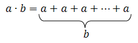

Twierdzenia i dowody
Istotą matematyki jest umiejętność logicznego rozumowania oraz umiejętność przekonania innych, że to rozumowanie naprawdę jest logiczne. Piękno królowej nauk ujawnia się w krystalizowaniu prawdy – ustalaniu, co jest słuszne, czyste i dobre oraz odrzucaniu tego, co fałszywe, zepsute i złe. Logiczne myślenie przypomina ludzką moralność, a proces myślowy przebiega podobnie do procesu sądowego: matematyk niczym sędzia będzie cynicznie oceniał nasze myślenie, a my musimy przekonać go, że mamy rację, zaś nasza dusza nieskalana jest matematycznym grzechem.
Intuicje
Niejednokrotnie podczas dotychczasowych matematycznych przygód dokonywaliśmy pewnych „spostrzeżeń”. Zajmując się ułamkami zwykłymi, zauważyliśmy, że kreskę ułamkową wolno zastąpić znakiem dzielenia, zaś sam ułamek możemy traktować jako inny sposób na zapisanie ilorazu. Aby objaśnić, o co nam chodzi, posługiwaliśmy się przykładami:
$$ \frac{7}{3}=7:3\\ \frac{3}{4}=3:4\\ \frac{6}{2}=6:2 $$licząc na to, że każdy zauważy tendencję i zrozumie, w jaki sposób zastosować takie przekształcenie dla dowolnych innych liczb. Ze ścisłego, matematycznego punktu widzenia opieranie reguł na kilku przykładach jest dość… umowne i śliskie. Naszą myśl powinniśmy ubrać w możliwie najbardziej uniwersalną, ogólnikową formę:
Dowolny ułamek zwykły można przedstawić w postaci ilorazu, w którym dzielną jest licznik, a dzielnikiem mianownik tego ułamka.
Tak skonstruowane zdanie załatwia wszystkie przypadki – jest to dość precyzyjna instrukcja postępowania, wyjaśniająca jak przedstawić jakikolwiek ułamek w postaci dzielenia. Jednak co by nie mówić, przeczytanie i zrozumienie tego przydługiego zdania jest wyczerpujące umysłowo. W trosce o czas i zdrowie psychiczne użyjemy raczej symbolicznego zapisu:
$$ \frac{a}{b}=a:b $$
Użyliśmy zmiennych oznaczonych literami $a$ i $b$, aby wyrazić następującą myśl:
Przypisz literze $a$ dowolną wartość liczbową, przypisz literze $b$ dowolną (niekoniecznie
inną) wartość liczbową, wstaw w miejsce wystąpień $a$ i $b$ przypisane wartości, a
otrzymasz poprawną równość.
Dzięki oznaczeniom literowym możemy sformalizować wiele myśli i „spostrzeżeń”, których dokonaliśmy podczas ubiegłych lekcji:
- Dodawanie jest przemienne: $$ a+b=b+a $$
- Dodawanie jest łączne: $$ a+(b+c)=(a+b)+c $$
-
Mnożenie to wielokrotne dodanie do siebie tej samej liczby:
 - Odejmowanie to odwrotność dodawania: $$ a-b=c \Leftrightarrow a+c=b $$
- Każda liczba dzieli się przez $1$: $$ 1 \mid a $$
- Ułamki można rozszerzać i skracać: $$ \frac{a}{b}=\frac{a \cdot c}{b \cdot c} $$
- Aby pomnożyć ułamki, mnożymy ich liczniki i mianowniki: $$ \frac{a}{b} \cdot \frac{c}{d}=\frac{a \cdot c}{b \cdot d} $$
- Aby dodać do siebie ułamki, należy sprowadzić je do wspólnego mianownika: $$ \frac{a}{b}+\frac{c}{d}=\frac{a \cdot d}{b \cdot d}+\frac{c \cdot b}{d \cdot b}=\frac{a \cdot d+c \cdot b}{b \cdot d} $$
- Dzielenie przez ułamek to mnożenie przez jego odwrotność: $$ \frac{a}{b}:\frac{c}{d}=\frac{a}{b} \cdot \frac{d}{c} $$
Trzykropek wykorzystany w zapisie $a \cdot b=a+a+a+⋯+a$ jest często używany, by przedstawić sumę lub iloczyn składników/czynników, których ilość nie jest bliżej znana lub zależy od pewnej zmiennej. Formuła $a-b=c \Leftrightarrow a+c=b$ wykorzystuje symbol równoważności $ \Leftrightarrow $, który informuje, że to, co po lewej, jest równoważne z tym, co po prawej.
Intuicje
Zauważenie pewnej tendencji wśród liczb (lub jakichkolwiek obiektów będących przedmiotem naszych matematycznych przygód) to pierwszy krok, by sformułować twierdzenie, czyli oficjalnie zatwierdzoną i ogólnie przyjętą prawdę matematyczną. Twierdzenie jest jakby regułą, która jest zawsze prawdziwa i nie można znaleźć od niej wyjątku.
Zajmując się $NWD$ i $NWW$ liczb moglibyśmy natknąć się na pewną zależność:
- Bierzemy liczby $6$ i $9$. Obliczamy $NWD (6,9)=3$ oraz $NWW (6,9)=18$. Okazuje się, że iloczyn $6 \cdot 9=54$ jest taki sam, jak iloczyn $3 \cdot 18=54$;
- Bierzemy liczby $15$ i $20$. Obliczamy $NWD (15,20)=5$, $NWW (15,20)=60$. Ponownie okazuje się, że $15 \cdot 20=300$ tak samo jak $5 \cdot 60=300$;
- Bierzemy liczby $100$ i $60$. Obliczamy $NWD (100,60)=20$, $NWW (100,60)=300$; znów otrzymujemy równość: $100 \cdot 60=20 \cdot 300=6000$.
Te trzy przykłady wywołują pokusę, by stwierdzić, że dla dowolnych dwóch liczb $a$ i $b$ zachodzi
$$ a \cdot b=NWD (a,b) \cdot NWW (a,b) $$Takie stwierdzenie jest cokolwiek śmiałe, ponieważ opiera się jedynie na przesłankach – na podstawie trzech przypadków próbujemy postawić wniosek dotyczący wszystkich możliwych par liczb. Postawiliśmy hipotezę, czyli stwierdzenie, które wydaje się prawdziwe (ponieważ nie udało nam się znaleźć kontrprzykładów), chociaż nie jesteśmy go pewni.
Teraz musimy przeprowadzić dowód, czyli przedstawić ogólne rozumowanie, które uzasadni słuszność naszego przypuszczenia dla wszystkich przypadków.
Pseudo-dowód
Przypomnijmy sobie, w jaki sposób wyznaczaliśmy $NWW$ i $NWD$ liczb. Dokonywaliśmy rozkładu na czynniki pierwsze obydwu liczb:
$$ 120=2 \cdot 2 \cdot 2 \cdot 3 \cdot 5\\ 300=2 \cdot 2 \cdot 3 \cdot 5 \cdot 5 $$A następnie wybieraliśmy te czynniki, które pojawiają się w obydwu rozkładach:
$$ 120 = \color{#dd3333}{\bf 2} \cdot \color{#dd3333}{\bf 2} \cdot 2 \cdot \color{#dd3333}{\bf 3} \cdot \color{#dd3333}{\bf 5}\\ 300 = \color{#dd3333}{\bf 2} \cdot \color{#dd3333}{\bf 2} \cdot \color{#dd3333}{\bf 3} \cdot \color{#dd3333}{\bf 5} \cdot 5 $$Czynniki, które pojawiają się w obydwu rozkładach, tworzą $NWD$ tych liczb:
$$ NWD(120, 300) = \color{#dd3333}{\bf 2} \cdot \color{#dd3333}{\bf 2} \cdot \color{#dd3333}{\bf 3} \cdot \color{#dd3333}{\bf 5} = 60 $$A razem z czynnikami pojawiającymi się tylko raz tworzą $NWW$ tych liczb:
$$ NWW(120, 300) = \color{#dd3333}{\bf 2} \cdot \color{#dd3333}{\bf 2} \cdot \color{#dd3333}{\bf 3} \cdot \color{#dd3333}{\bf 5} \cdot 2 \cdot 5 = 600 $$Dzięki takiemu zapisowi łatwiej zauważyć słuszność naszej hipotezy:
$$ 120 \cdot 300 = \color{#dd3333}{\bf 2} \cdot \color{#dd3333}{\bf 2} \cdot 2 \cdot \color{#dd3333}{\bf 3} \cdot \color{#dd3333}{\bf 5} \ \ \ \cdot \ \ \ \color{#dd3333}{\bf 2} \cdot \color{#dd3333}{\bf 2} \cdot \color{#dd3333}{\bf 3} \cdot \color{#dd3333}{\bf 5} \cdot 5 = \\ = \color{#dd3333}{\bf 2} \cdot \color{#dd3333}{\bf 2} \cdot \color{#dd3333}{\bf 3} \cdot \color{#dd3333}{\bf 5} \ \ \ \cdot \ \ \ \color{#dd3333}{\bf 2} \cdot \color{#dd3333}{\bf 2} \cdot \color{#dd3333}{\bf 3} \cdot \color{#dd3333}{\bf 5} \cdot 2 \cdot 5 = NWD(120, 300) \cdot NWW(120, 300) $$Teraz jedynie musimy sformalizować nasze rozumowanie i nie opierać się na konkretnych liczbach $120$ i $300$, a na dowolnych dwóch $a$ i $b$.
Dowód
Weźmy dowolne liczby $a$ i $b$ i dokonajmy ich rozkładu na czynniki pierwsze. Wybierzmy czynniki pojawiające się w obydwu rozkładach i oznaczmy je jako $r_1,r_2,r_3,r_4,…,r_k$.
Możemy zapisać
$$ a = \color{#dd3333}{\bf r_1} \cdot \color{#dd3333}{\bf r_2} \cdot \color{#dd3333}{\bf r_3} \cdot … \cdot \color{#dd3333}{\bf r_k} \cdot p_1 \cdot p_2 \cdot p_3 \cdot … \cdot p_n\\ b = \color{#dd3333}{\bf r_1} \cdot \color{#dd3333}{\bf r_2} \cdot \color{#dd3333}{\bf r_3} \cdot … \cdot \color{#dd3333}{\bf r_k} \cdot q_1 \cdot q_2 \cdot q_3 \cdot … \cdot q_m $$gdzie $p_1,p_2,p_3,…,p_n$ to pozostałe czynniki występujące w rozkładzie liczby $a$, zaś $q_1,q_2,q_3,…,q_m$ to pozostałe czynniki rozkładu $b$.
Ponieważ
$$ NWD (a,b) = \color{#dd3333}{\bf r_1} \cdot \color{#dd3333}{\bf r_2} \cdot \color{#dd3333}{\bf r_3} \cdot … \cdot \color{#dd3333}{\bf r_k}\\ NWW (a,b) = \color{#dd3333}{\bf r_1} \cdot \color{#dd3333}{\bf r_2} \cdot \color{#dd3333}{\bf r_3} \cdot … \color{#dd3333}{\bf \cdot r_k} \cdot p_1 \cdot p_2 \cdot p_3 \cdot … \cdot p_n \cdot q_1 \cdot q_2 \cdot q_3 \cdot … \cdot q_m $$to
$$ a \cdot b=( \color{#dd3333}{\bf r_1} \cdot \color{#dd3333}{\bf r_2} \cdot \color{#dd3333}{\bf r_3} \cdot … \cdot \color{#dd3333}{\bf r_k} \cdot p_1 \cdot p_2 \cdot p_3 \cdot … \cdot p_n ) \cdot ( \color{#dd3333}{\bf r_1} \cdot \color{#dd3333}{\bf r_2} \cdot \color{#dd3333}{\bf r_3} \cdot … \cdot \color{#dd3333}{\bf r_k} \cdot q_1 \cdot q_2 \cdot q_3 \cdot … \cdot q_m )=\\ =( \color{#dd3333}{\bf r_1} \cdot \color{#dd3333}{\bf r_2} \cdot \color{#dd3333}{\bf r_3} \cdot … \cdot \color{#dd3333}{\bf r_k} ) \cdot ( \color{#dd3333}{\bf r_1} \cdot \color{#dd3333}{\bf r_2} \cdot \color{#dd3333}{\bf r_3} \cdot … \cdot \color{#dd3333}{\bf r_k} \cdot p_1 \cdot p_2 \cdot p_3 \cdot … \cdot p_n \cdot q_1 \cdot q_2 \cdot q_3 \cdot … \cdot q_m )=\\ =NWD (a,b) \cdot NWW (a,b) \ □ $$Symbol $□$ zapisują matematycy z dobrym humorem, którzy chcą podkreślić sukces dobrze przeprowadzonego dowodu. Odczytujemy go jako „koniec dowodu” lub „co należało udowodnić”. Niezwykle optymistyczny akcent.
W ten jakże przyjemny sposób dokonaliśmy pierwszego, choć z pewnością nie ostatniego dowodu matematycznego. Od tej chwili następującą równość możemy określić dumnym mianem twierdzenia:
$$ a \cdot b=NWD (a,b) \cdot NWW (a,b) $$
Dowód przeprowadzony w sposób ogólny, z użyciem algebraicznego zapisu opartego na zmiennych literowych, jest jedynym sposobem na uzasadnianie własności w matematyce. Nie można przyjmować na wiarę tendencji, które wynikają z kilku zaobserwowanych przykładów. Ktoś mógłby stwierdzić, że:
$$ 0 \cdot 0=0\\ 1 \cdot 1=1 $$Zatem prawdziwa jest równość
$$ a \cdot a=a $$Nie jest istotne, czy tendencja dotyczy dwóch, dwudziestu czy dwustu przypadków. Matematyka potrafi zaskakiwać, zdarza się, że hipoteza okazuje się fałszywa dla bardzo dużych liczb lub złośliwych wyjątków, na które ciężko wpaść metodą prób i błędów.
Intuicje
Aby mieć prawo do osądzania, co jest prawdą a co nie, aby tworzyć reguły opisujące świat matematyki i w ogóle: aby korzystać na poważnie z formalnych narzędzi matematycznych należy najpierw ustalić, czym właściwie są obiekty, którymi się zajmujemy.
W prawdziwej matematyce każde pojęcie, każdy zapis, każdy symbol, z którego korzystamy, powinien mieć ścisłą i formalną definicję.
-
Zapis
stanowi definicję mnożenia. Dzięki niemu dowiadujemy się, w jaki sposób rozumieć symbol $ \cdot $ postawiony pomiędzy dwiema liczbami: wyrażenie $a \cdot b$ rozumiemy jako $b$ razy dodaną do siebie liczbę $a$. - Mówimy, że $a$ jest podzielne przez $b$, jeśli $\frac{a}{b}$ jest liczbą całkowitą. W ten sposób definiujemy zwrot „jest podzielne przez” jak również tłumaczymy zapis $a \mid b$. Matematycy zazwyczaj używają innej, prawie równoważnej definicji: $a \mid b$ jeśli istnieje liczba całkowita $c$, dla której $a=b \cdot c$.
- Liczby wymierne definiujemy jako ułamki $\frac{a}{b}$ gdzie $a$ oraz $b$ to liczby całkowite.
- $NWD(a,b)$ definiujemy jako największą liczbę naturalną $c$, taką że $c \mid a$ oraz $c \mid b$.
- $NWW(a,b)$ definiujemy jako najmniejszą liczbę naturalną $c$, taką że $a \mid c$ oraz $b \mid c$.
Definicja stanowi objaśnienie pojęcia / zapisu / symbolu / zwrotu, z którego korzystamy po raz pierwszy. To jakby podanie swojego imienia, gdy przedstawiamy się obcej osobie. Definiowanie pojęć jest dość swobodne: formułujemy definicję, jeśli tylko zajdzie taka potrzeba. Moglibyśmy w tej chwili stworzyć definicję „ułamek zwykły nazywamy ładnym, jeśli do jego zapisu potrzeba dwóch cyfr”.
Mając definicje, możemy formułować twierdzenia. Gdy już wiemy, czym są nowowprowadzone obiekty matematyczne, możemy dostrzegać pewne zjawiska z nimi związane. Moglibyśmy sformułować twierdzenie „istnieje $56$ ładnych ułamków zwykłych o różnych wartościach” i udowodnić je wykorzystując definicję ułamków ładnych:
Dowód
Jeśli ułamek $\frac{a}{b}$ jest ładny, liczby $a$ oraz $b$ wykorzystują łącznie dwie cyfry, a więc liczba $a$ musi być jednocyfrowa oraz $b$ musi być jednocyfrowa. Rozważamy więc ułamki, których liczniki mają jedną z wartości $0,1,2,3,4,5,6,7,8,9$, a mianowniki jedną z wartości $1,2,3,4,5,6,7,8,9$ ( $b$ nie może mieć wartości $0$)
Jeśli $b=1$, licznikiem może być $0,1,2,3,4,5,6,7,8,9$, co daje $10$ ułamków o różnych wartościach.
Jeśli $b=2$, licznikiem może być $1,3,5,7,9$, co daje $5$ nowych ułamków; dla parzystych liczników otrzymalibyśmy jedną z wartości z poprzedniego przypadku.
Jeśli $b=3$, licznikiem może być $1,2,4,5,7,8$, co daje $6$ nowych ułamków
Jeśli $b=4$, licznikiem może być $1,3,5,7,9$, co daje $5$ nowych ułamków
Jeśli $b=5$, licznikiem może być $1,2,3,4,6,7,8,9$, co daje $8$ nowych ułamków
Jeśli $b=6$, licznikiem może być $1,5,7$, co daje $3$ nowe ułamki; dla pozostałych liczników otrzymalibyśmy ułamek skracalny o wartości równej jednej z wcześniejszych przypadków
Jeśli $b=7$, licznikiem może być $1,2,3,4,5,6,8,9$, co daje $8$ nowych ułamków
Jeśli $b=8$, licznikiem może być $1,3,5,7,9$, co daje $5$ nowych ułamków
Jeśli $b=9$, licznikiem może być $1,2,4,5,7,8$, co daje $6$ nowych ułamków
Łącznie mamy $10+5+6+5+8+3+8+5+6=56$ ułamków o różnych wartościach $□$
Wprawdzie ani definicja, ani twierdzenie dotyczące ładnych ułamków nie ma dużej przydatności matematycznej, to idea postępowania matematycznego jest zachowana. Ścisłość i formalizm matematyczny wymagają pewnego rygoru: najpierw definiujemy pojęcia, którymi będziemy się posługiwać; definicje mogą opierać się tylko na pojęciach, które zostały zdefiniowane wcześniej. Zdefiniowane pojęcia wykazują cechy i zależności, które formułujemy w postaci twierdzeń. Słuszność twierdzenia wykazujemy za pomocą dowodu.
Zdarza się, że matematycy pochodzący z różnych środowisk nie dogadają się, co jest definicją a co twierdzeniem. Możemy zdefiniować liczby wymierne jako ułamki o całkowitym liczniku i mianowniku i sformułować twierdzenie „każda liczba wymierna ma rozwinięcie dziesiętne skończone lub nieskończone okresowe”, które udowodnilibyśmy wykorzystując wspomnianą definicję. Równie dobrze moglibyśmy zdefiniować liczby wymierne jako liczby, których rozwinięcie dziesiętne jest skończone lub nieskończone okresowe, a następnie stworzyć twierdzenie „każdą liczbę wymierną można przedstawić w postaci ułamka zwykłego o całkowitym liczniku i mianowniku”. Kwestia wygody.